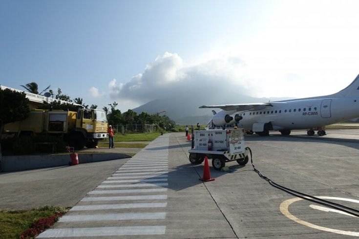

Planning your trip to Batanes? Here are the important things you need to prepare for.
Batanes is only accessible by airplane. Philippine Airlines (PAL) and Skyjet Airlines fly from Manila (NAIA) to Basco, Batanes. The flight takes about 1.5 to 2 hours.
Tip: Book your flights very early — especially for peak season (March to June). Seats sell out fast and cancellations due to weather are common.
March to June is the best time to visit. The weather is stable, the sea is calm (important for boat trips to Sabtang), and the hills are very green and beautiful.
Avoid July to October — this is typhoon season and flights or boats may be cancelled. November to February can also be cold and very windy.
There are very few ATMs in Batanes and they are not always working. Bring enough cash for your whole trip before leaving Manila. Credit cards are usually not accepted.
A rough daily budget including accommodation, meals, and activities is around P3,000 to P5,000 per person per day.
Mobile signal in Batanes is limited, especially outside of Basco. Globe and Smart both have some coverage in the main areas but it can be slow and unreliable.
Wi-Fi is available at most accommodations but do not expect fast speeds. Many people consider the digital detox a feature, not a problem.
Medical facilities in Batanes are very limited. The main hospital is in Basco but serious cases are flown to Manila. Bring a basic first aid kit and any prescription medicines.
Travel insurance with medical evacuation coverage is strongly recommended. Also check if there are any travel advisories before your trip.
Tropical oceanic; windy all year round
Ivatan, Filipino, some English spoken
Philippine Standard Time (UTC+8)
Tricycle, bicycle, or a hired island tour guide
Batanes is called the "Home of the Winds" for a very good reason. Strong winds are normal even outside of typhoon season. Hold onto your hat, secure your belongings, and just enjoy the experience — the wind is part of what makes Batanes so special and unforgettable.